JavaScript Robots
Artwork by Mike Sgier, http://msgierillustration.com/
Who am I?
- Dean Iverson
 @deanriverson
@deanriverson
 deanriverson
deanriverson
- Virginia Tech
Transportation Institute

FIRST Robotics
For Inspiration and Recognition of Science and Technologoy

http://coloradofirst.org/
FIRST Robotics
For Inspiration and Recognition of Science and Technologoy
http://coloradofirst.org/
JavaScript Robots
Is JavaScript on an Arduino possible?
Why?
Johnny-Five

http://johnny-five.io/
Platform Support
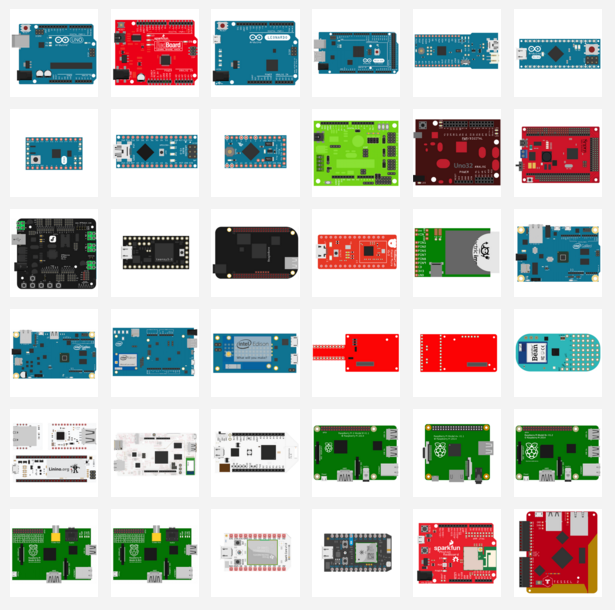
http://johnny-five.io/platform-support
Blinky
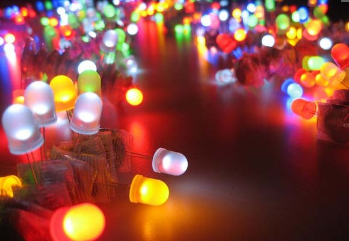Breadboards 101
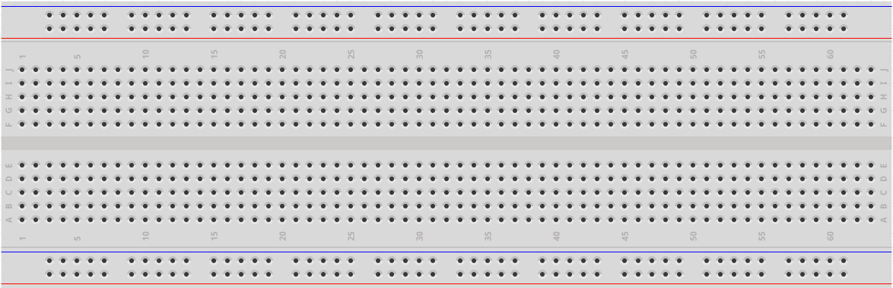Wire It Up!
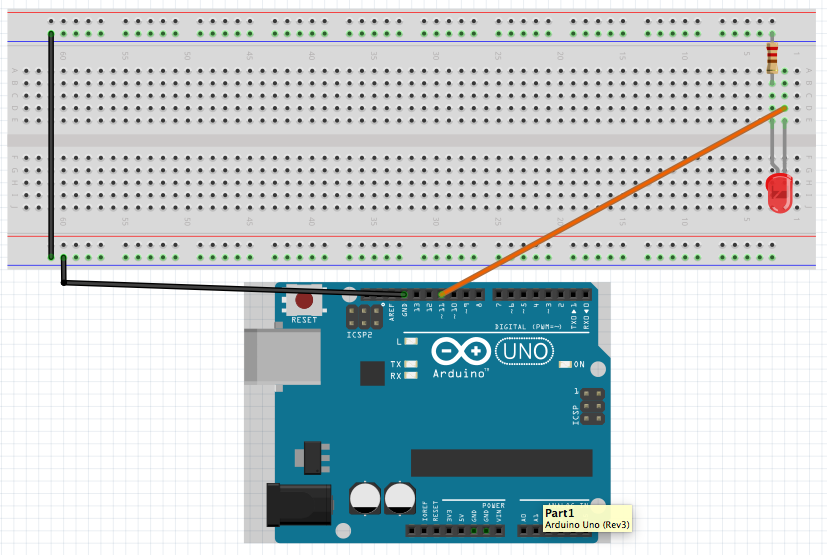Setting Up an Arduino
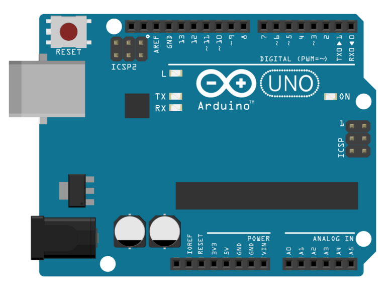- Plug Arduino into USB port
- Open Arduino IDE
- Set correct board
- File→Examples→
Firmata→StandardFirmata - Upload Sketch
blinky.js
var five = require('johnny-five');
five.Board().on("ready", function() {
console.log("Board is ready!");
var led = new five.Led(11);
setInterval(toggleLed, 500);
function toggleLed() {
led.toggle();
}
});
console.log("Waiting for board to be ready...");
blinky2.js
var five = require('johnny-five');
five.Board().on("ready", function() {
five.Led(11).blink(500);
});
led.js
var five = require('johnny-five');
five.Board().on("ready", function() {
var led = five.Led(11);
this.repl.inject({
led: led
});
});
Dimming LEDs??
The hard way and the easy way...
PWM
Pulse Width Modulation
Arduino PWM
What Makes a Robot?
- Input
- Buttons
- Sensors
- Output
- Motors & Servos
- LEDs
- Speakers
Output: Speakers
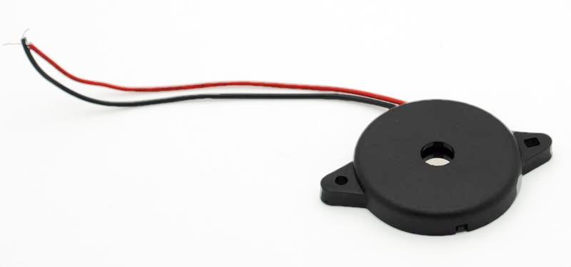Wire It Up!
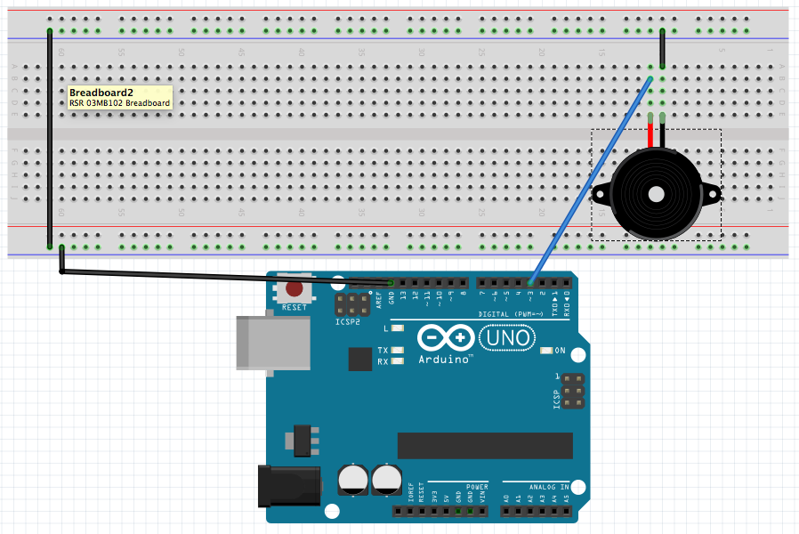piezo.js
var five = require("johnny-five");
five.Board().on("ready", function() {
five.Piezo(3).play({
// A song is an array of pairs of notes and beats.
// The first arg is the note (null == "no note").
// The second argu is the length of time (beat).
song: [
["C4", 1 / 4],
["D4", 1 / 4],
["F4", 1 / 4],
["D4", 1 / 4],
["A4", 1 / 4],
[null, 1 / 4],
["A4", 1],
["G4", 1],
[null, 1 / 2],
["C4", 1 / 4],
["D4", 1 / 4],
["F4", 1 / 4],
["D4", 1 / 4],
["G4", 1 / 4],
[null, 1 / 4],
["G4", 1],
["F4", 1],
[null, 1 / 2]
],
tempo: 100
});
});
songs.js
var five = require("johnny-five");
var songs = require("j5-songs")
five.Board().on("ready", function() {
var piezo = new five.Piezo(3);
this.repl.inject({
song: piezo,
beet: songs.load('beethovens-fifth'),
mario: songs.load('mario-intro')
});
});
Output: Motors
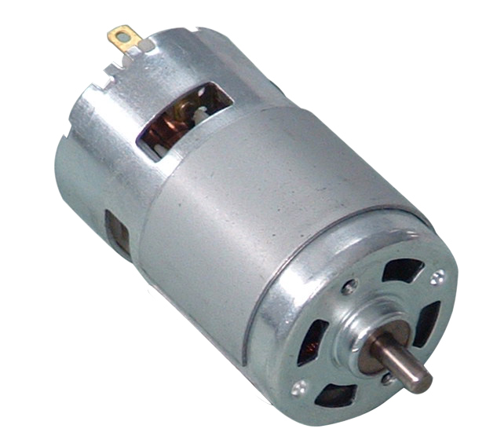 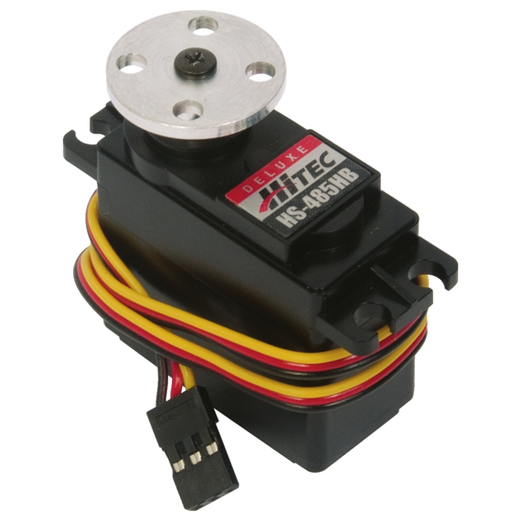DC Motors on the Inside
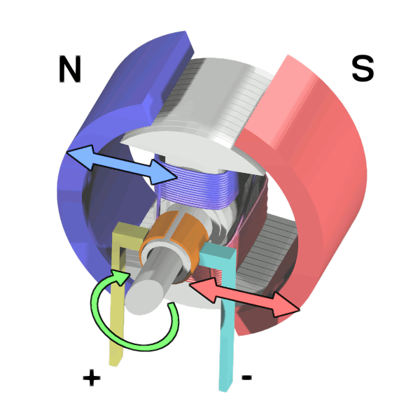H-Bridge Motor Controller
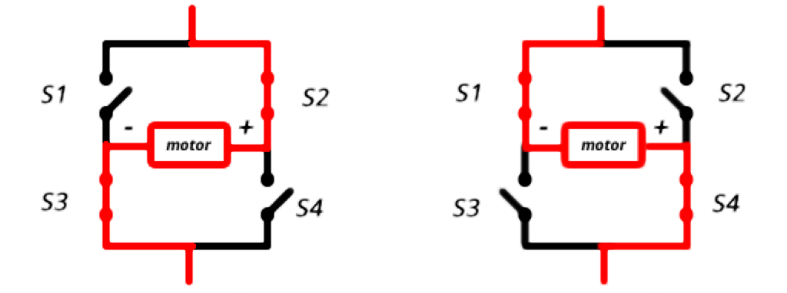Motor Encoder
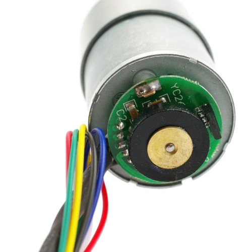Servos on the Inside
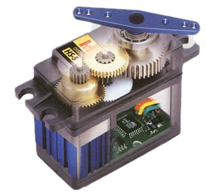Wire It Up!
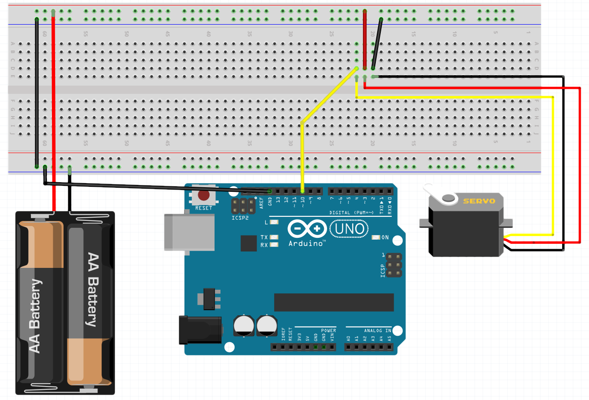servo.js
var five = require('johnny-five');
five.Board().on("ready", function() {
this.repl.inject({
// min(), max(), sweep(), stop(), center()
servo: five.Servo(10)
});
});
Inputs
- Accelerometer
- Gyro
- Button
- Compass
- Joystick
- Ultrasonics
- LIDAR Lite
- Infrared
- Analog Inputs
- Keypad
- Relays
- Motion
- Temperature
- Barometer
- And much more...
LIDAR Lite
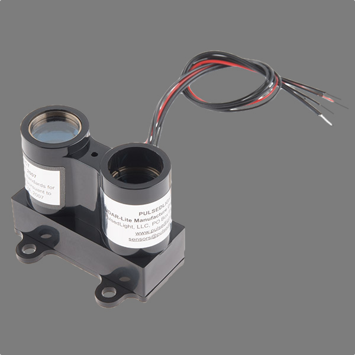Wire It Up!

lidarlite.js
var five = require("johnny-five");
five.Board().on("ready", function() {
var proximity = new five.Proximity({
controller: "LIDARLITE"
});
proximity.on("data", function() {
console.log("Proximity: ");
console.log(" cm : ", this.cm);
});
proximity.on("change", function() {
console.log(this.cm + "cm");
});
});
LIDAR Lite + Servo
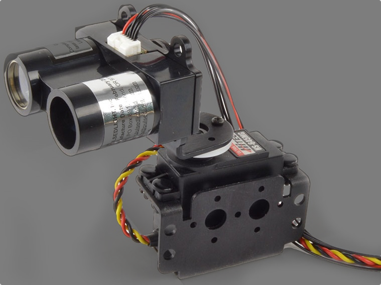claw.js
var five = require("johnny-five");
five.Board().on("ready", function() {
var claw = new five.Servo(9);
var arm = new five.Servo(10);
var degrees = 10;
var incrementer = 10;
var last;
this.loop(25, function() {
if (degrees >= 180 || degrees === 0) {
incrementer *= -1;
}
degrees += incrementer;
if (degrees === 180) {
if (!last || last === 90) {
last = 180;
} else {
last = 90;
}
arm.to(last);
}
claw.to(degrees);
});
});
joystick.js
var five = require("johnny-five");
five.Board().on("ready", function() {
var pan, tilt, joystick;
// Pan & tilt servos
pan = new five.Servo(9);
tilt = new five.Servo(10);
// Joystick controller
joystick = new five.Joystick({
pins: [ 'A0', 'A1' ]
})
// Center all servos
five.Servos.center();
joystick.on('change', function() {
tilt.move(Math.ceil(180 * this.y));
pan.move(Math.ceil(180 * this.x));
})
});
http://johnny-five.io/examples/
for many more examples.
Cutting the Cord
BeagleBone Black
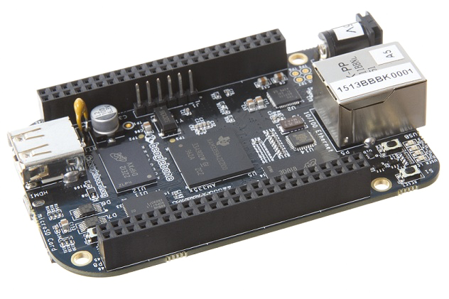http://beagleboard.org/
blinky.js
var five = require("johnny-five");
var BeagleBone = require("beaglebone-io");
// var raspi = require('raspi-io');
var board = new five.Board({
io: new BeagleBone()
});
board.on("ready", function() {
five.Led("P9_14").blink(500);
});
Tessel
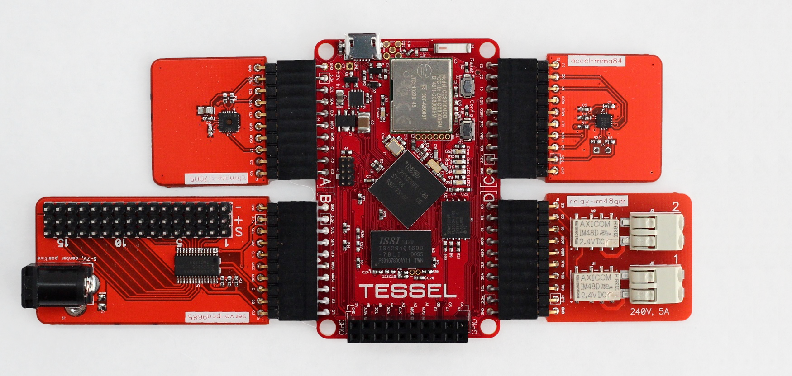http://tessel.io
Installation
- Plug Tessel into USB port
$ npm install -g tessel$ tessel update
Note: Requires Node 0.12.7
blinky.js
var tessel = require('tessel');
var led1 = tessel.led[0].output(1);
var led2 = tessel.led[1].output(0);
console.log("I'm blinking! (Press CTRL + C to stop)");
setInterval(function () {
// Toggle the led states
led1.toggle();
led2.toggle();
}, 100);
$ tessel run blinky.js
$ tessel _____
help(list these commands)run(run a program)stop(stop a program)push(upload and run at boot)erase(clears flash)wifi(lists available networks)logs(show recent activity)list(shows connected Tessels)update(update firmware)
https://github.com/tessel/t1-docs
Modules
- Accelerometer
- Ambient Light + Sound
- Audio
- Bluetooth Low Energy
- Camera
- Climate
- GPRS
- GPS
- Infrared
- MicroSD Card
- nRF24
- Relay
- RFID
- Servo
Climate Example
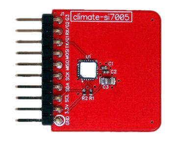- Plug climate module into port A
npm install climate-si7005
climate.js
var tessel = require('tessel');
var climatelib = require('climate-si7005');
var climate = climatelib.use(tessel.port['A']);
climate.on('ready', function() {
console.log('Connected to si7005');
// Loop forever
setImmediate(function loop() {
climate.readTemperature('f', function (err, temp) {
climate.readHumidity(function (err, humid) {
console.log('Degrees:', temp.toFixed(4) + 'F',
'Humidity:', humid.toFixed(4) + '%RH');
setTimeout(loop, 300);
});
});
});
});
$ tessel run climate.js